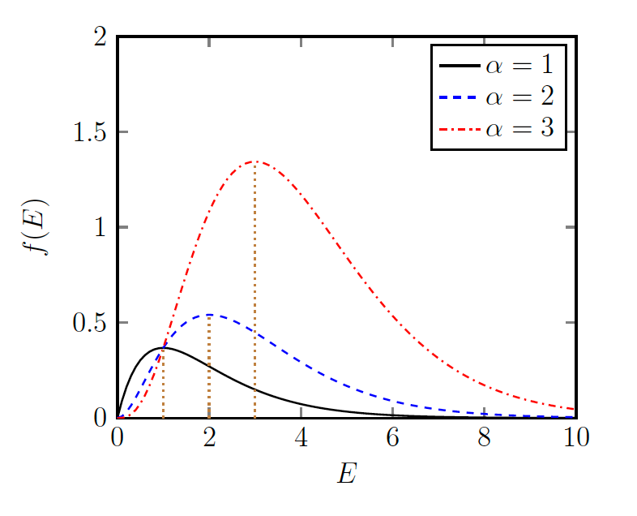
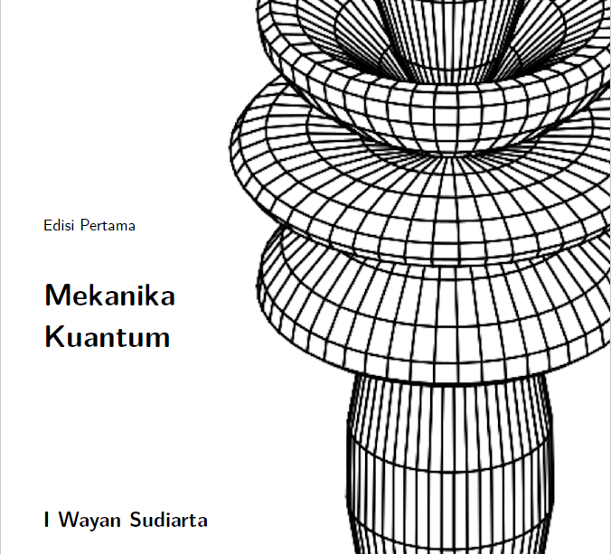
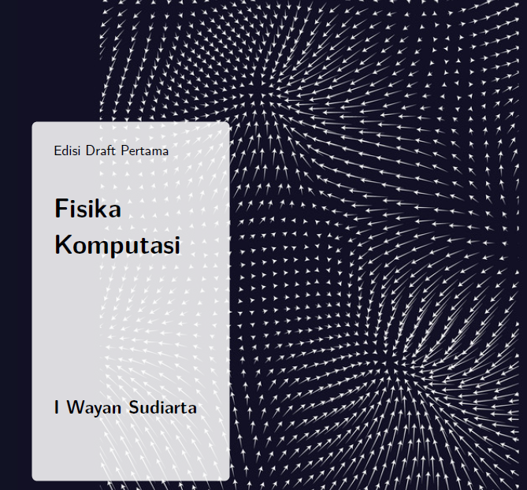

New Power Method

My latest project is a new power method to obtain solutions of eigenvalue problems.
The method can determine not only the dominant or lowest eigenvalues
but also all eigenvalues without the need for a deflation procedure.
The method uses a functional of an operator (or a matrix).
The method can freely select a solution by varying a parameter associated to an estimate of the eigenvalue.
Supporting files can be found on Github .
Moodle
In this project a little book about Moodle Learning Management Systems was written. The book contains enough explanations for teacher or lecturer to create Moodle courses. The book can be downloaded here .
FDTD Method

Simulation of propagations of electromagnetics waves through any materials are of important for many applications. In this project, I used the finite difference time domain (FDTD) method for EM simulation.
Kuantum

My field of research is quantum physics. I also teach a quantum physics course. For this course, I have written a quantum book with applications of Maxima CAS.
Fisika Komputasi

Besides theoretical works, I also love doing computations and simulations especially for quantum systems. I also love coding in my spare time. For a computational physics course, I wrote a python book.